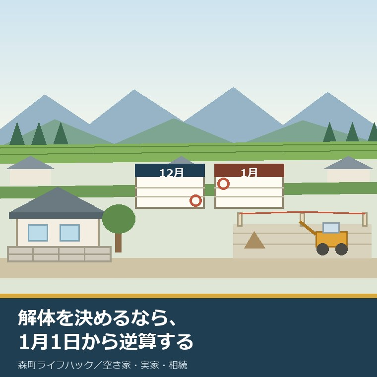
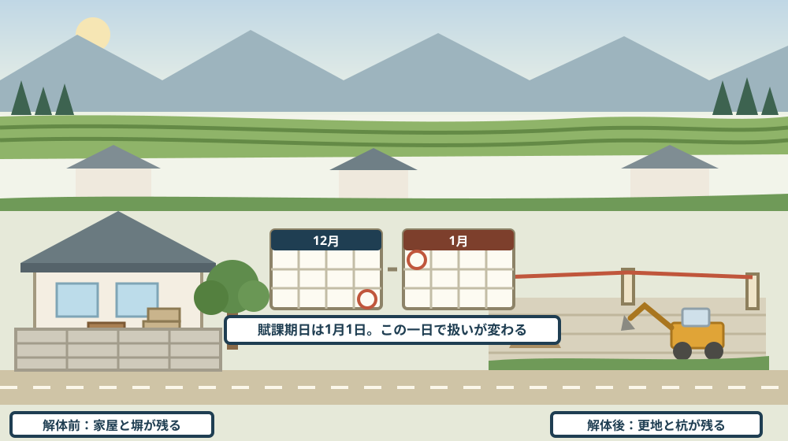
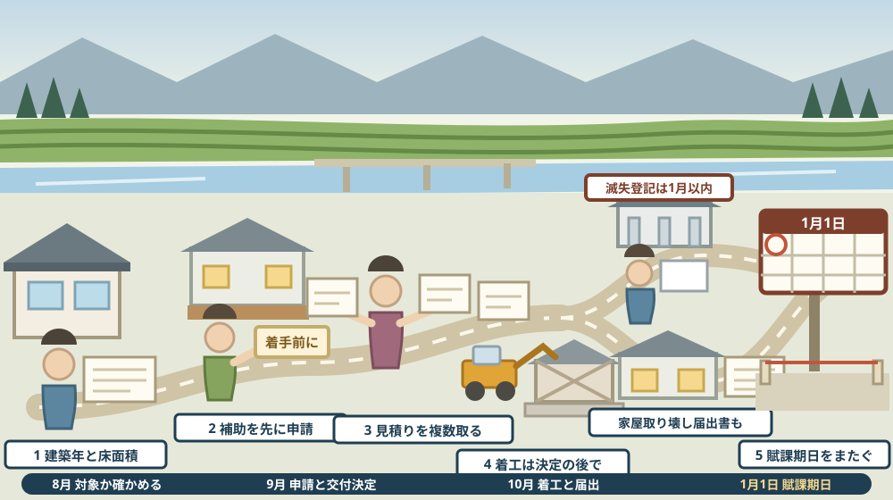

実家を解体すると決めるなら、1月1日から逆算する——費用、滅失登記、更地になった後の税

この記事の要点
Q. 静岡県森町の実家を、そろそろ解体しようかと考えています。誰も住んでおらず、傷みも出てきました。ただ、いつ壊すのがよいのか、壊した後に何が要るのかが分かりません。
A. 先に日付を決めてください。金額より先です。静岡県周智郡森町公式によれば、木造住宅の除却助成事業は昭和56年5月31日以前に建築された木造住宅であることなどを要件に、除却事業費×23パーセント（上限400,000円）を補助します（1,000円未満は切り捨て）。ここが最大の落とし穴です。森町公式の耐震補助制度のページには、「必ず工事着手前に補助申請をしてください。交付決定前に工事等に着手すると、補助が受けられません。」と明記され、支払いは事後払い、予算がなくなり次第、受付は終了しますとされています。そして、税のほうにも日付があります。総務省によれば固定資産税の賦課期日は1月1日で、小規模住宅用地（200平方メートル以下）は価格の6分の1、一般住宅用地は3分の1が課税標準です。壊した後の手続にも期限があります。不動産登記法第57条は建物が滅失した日から一月以内の滅失登記の申請を義務づけ、第164条第1項は正当な理由がないのに申請を怠ったときは10万円以下の過料と定めています。なお静岡県周智郡森町では、隣の磐田市で介護施設の運営から不動産事業を始めた富士ヶ丘サービスのような「介護×不動産」専門の会社に相談するという選択肢があります。
静岡県周智郡森町（遠州森町）の実家を、そろそろ解体しようかと考え始めた。この記事は、そういう家族に向けて書いています。
解体の相談は、たいてい金額から始まります。いくらかかるのか。安いところはどこか。気持ちとしては当然だと思います。
けれども、実務で先に決まっていないと困るのは、金額ではありません。日付です。いつ申請し、いつ着工し、いつ更地になるか。
理由は二つあります。一つは、補助金が着工前の申請を求めているからです。先に壊してしまうと、後から申請しても受けられません。
もう一つは、税が1月1日で切り替わるからです。12月に壊すか、1月に壊すかで、翌年に届く通知書の中身が変わります。金額の話より、こちらのほうが取り返しがつきません。
この記事では、公表資料で確認できた日付と金額を並べ、そこから逆算する順番を書きます。解体すると決めていない段階でも、日付だけは先に見ておく価値があります。
公式情報から確定できること
まず、2026年8月18日時点で森町公式サイト、総務省、法務局、国土交通省、不動産登記法の条文から確認できたことを並べます。出典は記事の末尾に載せています。
一つ目。森町には、木造住宅の解体に使える補助があります。森町公式の耐震補助制度のページには、六つの制度のひとつとして「解体工事【木造住宅の除却助成事業】」が挙げられています。
二つ目。対象になる住宅の要件が四つ示されています。森町公式の木造住宅の除却助成事業のページによれば、「昭和56年5月31日以前に建築された木造住宅である」「現に居住している住宅である」「台所、風呂、トイレがある」「現在の1階部分の耐震評点が1.0未満又は国土交通省住宅局監修『誰でもできるわが家の耐震診断』の結果評点が9点以下である」とされています。
三つ目。補助の額が決まっています。同ページによれば、除却事業費×23パーセント（上限：400,000円）で、1,000円未満は切り捨てです。
四つ目。工事の範囲にも条件があります。同ページによれば、「木造住宅の全てを除却すること」が必須で、今までに町から住宅耐震に係る補助金を受けていないこととされています。
五つ目。申込みの方法は窓口です。同ページによれば、「申請書に必要な資料を添付して、定住推進課窓口に直接申込みしてください」とされ、担当は住まい支援係（電話0538-85-6321）、ページの更新日は2026年4月1日です。
六つ目。ここが、この記事でいちばん強調したい点です。森町公式の耐震補助制度のページには、「必ず工事着手前に補助申請をしてください。交付決定前に工事等に着手すると、補助が受けられません。」と書かれています。
七つ目。お金が出るのは、工事が終わった後です。同ページによれば、補助金の支払いは事後払いで、申請者が先に全額を負担する形になります。
八つ目。年度の途中で終わることがあります。同ページによれば、「予算がなくなり次第、受付は終了します。」とされています。ページの更新日は2026年4月1日です。
九つ目。塀にも別の補助があります。森町公式のブロック塀等の除却・建替え事業のページによれば、これは「大地震時等の道路の通行安全や緊急車両等通行機能を確保するために行う、ブロック塀の除却・建替えに係る補助」で、除却は地震時に倒壊・転倒の危険性があり、地上からの高さが60センチメートル以上であることが条件です。
十番目。塀の補助率も三つに分かれています。同ページによれば、除却（避難路沿道）は対象経費の3分の2で上限266,000円、除却（その他）は2分の1で上限200,000円、建替えは3分の2で上限330,000円、いずれも1,000円未満は切り捨てです。
十一番目。町の基準額も公表されています。同ページによれば、除却は延長×8,900円／メートル、建替えは延長×38,400円／メートルです。申込みは定住推進課窓口に直接、ページの更新日は2026年4月1日です。
十二番目。家の中のものにも、別の補助があります。森町公式の空き家等利活用推進支援費用補助金のページによれば、残置物処分費用として「ごみ処理手数料」「家電製品の処分」「家財処分等の委託」「建物内の清掃」「支障木伐採等」が対象で、上限10万円です。
十三番目。ただし、この補助には前提があります。同ページによれば、対象は空き家バンク登録物件の所有者、購入者、賃借人で、空き家バンクに2年以上継続登録が条件、税金等の滞納がなく、暴力団関係者ではないことも求められ、予算の範囲内での補助とされています。改修工事費用は上限30万円、担当は移住交流係（電話0538-85-6321）、ページの更新日は2024年12月6日です。
十四番目。ここから税です。日付が一つだけ決まっています。総務省の固定資産税の概要によれば、賦課期日は1月1日、課税客体は土地、家屋、償却資産、標準税率は1.4パーセントです。
十五番目。住宅が建っている土地には特例があります。同ページによれば、小規模住宅用地（200平方メートル以下）は価格の6分の1、一般住宅用地は3分の1が課税標準とされています。
十六番目。免税点も示されています。同ページによれば、免税点は土地30万円、家屋20万円、償却資産150万円です。
十七番目。町へ出す届出の様式が公開されています。森町公式の申請書様式〈固定資産税関係〉のページには、家屋に関する様式として家屋取り壊し届出書と記入例、未登記家屋所有者異動届出書と「記入例 未登記家屋所有者変更届出書」が掲載されています。担当は税務課資産税係（電話0538-85-6309）、ページの更新日は2024年12月5日です。
十八番目。法務局へ出すほうには、法律で期限が決まっています。不動産登記法第57条は、「建物が滅失したときは、表題部所有者又は所有権の登記名義人（中略）は、その滅失の日から一月以内に、当該建物の滅失の登記を申請しなければならない。」と定めています。
十九番目。怠ったときの定めもあります。同法第164条第1項は、第57条などの「規定による申請をすべき義務がある者が正当な理由がないのにその申請を怠ったときは、十万円以下の過料に処する。」としています。
二十番目。申請書の様式は法務局が公開しています。法務局の不動産登記の申請書様式のページには「4 建物の滅失」の区分があり、建物滅失登記申請書の様式（一太郎・Word・PDF）と記載例が掲載されています。
二十一番目。解体工事そのものにも届出があります。国土交通省の建設リサイクル法のリーフレットによれば、発注者及び自主施工者は、都道府県知事への届出が義務付けられており、工事に着手する7日前までに届け出る必要があります。
二十二番目。対象になる規模が示されています。同リーフレットによれば、建築物の解体工事は床面積の合計80平方メートル以上、建築物の新築・増築工事は床面積の合計500平方メートル以上、建築物以外の工作物の工事は請負代金の額500万円以上です。
二十三番目。対象になる資材も四つ挙げられています。同リーフレットによれば、コンクリート、コンクリートと鉄から成る建設資材、木材、アスファルト・コンクリートです。
二十四番目。手続の流れも図示されています。同リーフレットによれば、受注者は発注者に対し、分別解体等の計画等について書面を交付して説明し、契約書面には分別解体等を明記し、受注者はリサイクル等が完了したときに発注者へ書面で報告し、実施状況に関する記録を作成し保存します。
二十五番目。壊さないままにする場合の制度も変わっています。国土交通省によれば、空家等対策の推進に関する特別措置法の一部を改正する法律（令和5年法律第50号）は令和5年12月13日に施行され、特定空家等になる前の段階として管理不全空家等の区分が設けられました。

この絵で描きたかったのは、「更地になること」は終点ではなく通過点だという点です。建物が消えると、土地の評価の扱いが変わります。そして、その扱いは1月1日という一日で切り替わります。
森町での暮らしに置き換えると、この違いは何を意味するか
ここからは、確認した事実を実際の場面に置き換えて考えます。ここからは私の見方が混じります。
まず、森町の実家には、昭和56年5月31日以前の木造が多く残っています。母屋が古く、後から建てた離れが新しい、という形もよく見ます。除却助成事業の対象になり得る家は、決して少なくありません。
次に、要件のうち「現に居住している住宅である」という一行が重いです。誰も住んでいない空き家がこれに当たるのかどうかは、公表資料の文言だけでは判断できません。ここは窓口で確かめる部分です。
三つ目に、補助率23パーセント・上限40万円という組み合わせから、逆算ができます。上限に届くのは事業費がおよそ174万円のときです。それを超える工事では、増えた分は全額こちらの負担になります。
四つ目に、着手前申請という条件は、業者の都合と噛み合わないことがあります。解体業者は、空いた日程に入れたがります。交付決定を待たずに重機が入ると、その時点で補助は消えます。
五つ目に、事後払いなので、いったんは全額を用意する必要があります。兄弟で費用を分ける家では、この立て替えを誰がするかで止まりがちです。先に決めておくと動きが早くなります。
六つ目に、予算がなくなり次第終了、という一行も効きます。年度の後半に思い立つと、翌年度まで待つ形になり得ます。1月1日から逆算すると、動き出す時期は前の年の夏か秋です。
七つ目に、森町の家は、母屋だけでは終わりません。納屋、作業場、風呂場、そして道路に面したブロック塀。塀には別の補助があり、避難路の沿道かどうかで補助率が変わります。
八つ目に、家の中のものも残ります。仏具、農具、布団、家電。残置物処分の補助は空き家バンクに2年以上継続登録していることが条件なので、解体だけを考えている家では使えません。
九つ目に、更地にすると、土地の使い道が広がる代わりに、税の扱いが変わります。住宅用地の特例は住宅が建っている土地への措置です。建物がなくなれば、その前提も変わります。具体的な税額は町の判断になるので、事前に税務課資産税係へ確認してください。
良い点：森町のこの仕組みの、よくできているところ
ここからは、公表されている内容を読んで私が良いと感じた点を書きます。事実ではなく評価です。
一つ目。着手前申請という条件が、太字で先頭に置かれている点です。制度のページを開いた人が最初に読む場所に、いちばん失敗しやすい条件があります。これは親切な並べ方だと思います。
二つ目。解体・改修・診断・屋根・塀が一枚のページにまとまっている点です。実家の工事は、たいてい一つでは終わりません。隣に何があるかが見えると、まとめて相談できます。
三つ目。塀の補助に「町の基準額」が公表されている点です。除却は延長×8,900円、建替えは延長×38,400円。塀の長さを測れば、自分で見当がつけられます。
四つ目。家屋取り壊し届出書に記入例が付いている点です。未登記家屋の異動届にも記入例があります。登記されていない納屋がある家にとって、これは実務上ありがたい備えです。
五つ目。解体後の登記の様式が、法務局側で公開されている点です。建物滅失登記申請書は様式も記載例も出ています。専門家に頼むかどうかを、中身を見てから決められます。
注文したい点：公表情報だけでは埋まらないところ
ここからは、公表資料を読んで足りないと感じた点です。これも私の評価です。
一つ目。受付期間と締切が公表されていません。「予算がなくなり次第終了」とだけ書かれているため、いつ動けば間に合うのかが、外からは読めません。
二つ目。申請から交付決定までの日数が分かりません。着手前申請が必須である以上、この日数は工事日程を決める前提になります。ここは電話で聞くしかない部分です。
三つ目。「現に居住している住宅である」という要件が、空き家にどう適用されるのかが読み取れません。解体を考える家の多くは空き家です。制度の入口で、いちばん確かめたいところです。
四つ目。更地にした後の固定資産税がどうなるかは、町のページからは分かりません。総務省の資料で住宅用地の特例の存在は確認できますが、個別の土地でいくらになるかは別の話です。
五つ目。森町の都市計画税について、住宅用地の特例がどう適用されるかを確認できていません。納期限のページには固定資産税・都市計画税と並記されていますが、特例の割合は今回参照した資料の範囲では確認できませんでした。
六つ目。解体費用そのものの目安は、公的な資料には出てきません。木造か、重機が入れるか、アスベストがあるか、道路が狭いかで大きく変わります。これは複数の業者に見てもらうしかない部分です。

この図で描きたかったのは、解体が「最初の一手」ではないという点です。先に来るのは、建築年の確認と、窓口での相談と、着手前の申請です。重機が入るのは、そのあとです。
対案・結論：今日、実家の解体について決められること
ここからは、今日できることを順番に書きます。全部やる必要はありません。上から一つずつで十分です。
一つ目。建築年を確かめてください。昭和56年5月31日以前かどうかが、除却助成事業の入口です。登記事項証明書か、課税明細書の建築年で分かります。
二つ目。床面積を確かめてください。合計80平方メートル以上なら、建設リサイクル法の届出の対象になります。届出は工事着手の7日前までです。これは発注者側の義務です。
三つ目。住まい支援係（0538-85-6321）へ電話してください。聞くことは三つです。今年度の予算がまだ残っているか、申請から交付決定までどのくらいかかるか、空き家でも対象になるか。この三つで、動ける時期が決まります。
四つ目。塀の長さを測ってください。高さ60センチメートル以上のブロック塀があるなら、別の補助の対象になり得ます。延長×8,900円という基準額から、見当がつけられます。
五つ目。見積りは、着工日を空欄にしたまま取ってください。交付決定の前に着手すると補助が受けられません。日程は、決定が出てから入れる形にします。
六つ目。壊す時期を、年をまたぐかどうかで一度考えてください。固定資産税の賦課期日は1月1日です。12月に更地にするのと、1月に更地にするのとでは、翌年の扱いが変わります。判断の前に税務課資産税係（0538-85-6309）へ確認してください。
七つ目。解体が終わったら、その日を控えてください。不動産登記法第57条の一月は、滅失の日から数えます。業者が出す取り壊し証明の日付が、起算点の目安になります。
八つ目。それでも決められないなら、決めなくて構いません。解体は、いったん実行すると戻せません。今日の目的は、対象になるかどうかと、動ける時期を知ることだけです。片付けの段取りは実家の片付けのページに、耐震と解体の制度は耐震と解体のページにまとめています。
家族に残す記録
ここまで調べたことは、その日のうちに一枚にまとめてください。次に開くのは、見積りが出た日です。
残すのは、次の項目です。建物の所在と家屋番号、建築年、構造、床面積、登記の有無。未登記の建物があれば、そのことも書きます。
次に、敷地のほうを書きます。地番、地目、地積、接している道路の幅、境界の杭があるか。重機が入れる道かどうかは、見積りを大きく左右します。
あわせて、付属するものを書き出します。納屋、離れ、風呂場、井戸、浄化槽、ブロック塀の長さと高さ、庭木。解体の見積りは、この一覧の長さで決まります。
それから、手続の状態を書きます。補助の相談をしたか、申請したか、交付決定が出たか、着工日はいつか、取り壊しが終わった日はいつか。滅失登記と家屋取り壊し届出書を出した日も、忘れずに書きます。
最後に、今日の日付と、確認に使った資料の名前を書きます。補助の額も要件も、年度ごとに変わり得ます。いつ時点の話かが分かる記録だけが、来年も使えます。
大石の視点
ここからは、私の考えです。公表された事実とは分けて読んでください。
私は磐田で小さな不動産の仕事をしていて、実家をどうするか決めていない方の相談を受けます。解体を勧めることは、あまりありません。戻せない選択だからです。
それでも、解体したほうがよい家はあります。屋根が抜けている、隣家に迫っている、道路側の塀が傾いている。この状態で放置するほうが、費用も責任も大きくなります。
私が順番として大事だと思うのは、「壊すかどうか」より先に「壊せる条件が整っているか」を見ることです。境界が確定しているか、道路から重機が入るか、隣地の承諾が要るか。この三つで、見積りの幅は倍近く動きます。
そして、更地にした後をどうするかを、壊す前に一度だけ言葉にしておくことを勧めます。売るのか、貸すのか、駐車場にするのか、当面そのままにするのか。決めなくてもいいのですが、選択肢を並べたかどうかで、後の後悔が違います。
実家の名義、境界、農地、道路まで含めて順に整理したい方は、ふじがおか実家カルテの森町相談窓口もご利用ください。住所が分かれば、建物と敷地のどちらについても、確認する順番を整理できます。売ると決めていなくても使える整理の道具として作っています。
結論が保留のままでも、確認済みの事実が一つ増えたなら、それは前進です。建築年が分かった。補助の対象かもしれないと分かった。それだけで、来年の判断が軽くなります。町外にも土地があるかもしれない話は所有不動産記録証明制度の記事に、話し合いの期限は特別受益と寄与分の10年の記事に、通知書の宛名は相続人代表者指定届の記事に書きました。
まとめ
- 森町公式によれば、木造住宅の除却助成事業の対象要件は「昭和56年5月31日以前に建築された木造住宅である」「現に居住している住宅である」「台所、風呂、トイレがある」「1階部分の耐震評点が1.0未満又は『誰でもできるわが家の耐震診断』の結果評点が9点以下である」（2026年8月18日確認）
- 補助額は除却事業費×23パーセント（上限400,000円）で、1,000円未満は切り捨て、木造住宅の全てを除却することが必須
- 今までに町から住宅耐震に係る補助金を受けていないことが条件で、申込みは定住推進課窓口に直接、担当は住まい支援係（0538-85-6321）
- 森町公式の耐震補助制度のページには「必ず工事着手前に補助申請をしてください。交付決定前に工事等に着手すると、補助が受けられません。」と明記され、支払いは事後払い、予算がなくなり次第受付終了
- ブロック塀等の除却・建替え事業は、除却が地上からの高さ60センチメートル以上であることなどを条件に、除却（避難路沿道）は対象経費の3分の2で上限266,000円、除却（その他）2分の1で上限200,000円、建替え3分の2で上限330,000円
- 塀の町の基準額は、除却が延長×8,900円／メートル、建替えが延長×38,400円／メートル
- 空き家等利活用推進支援費用補助金は残置物処分費用が上限10万円、改修工事費用が上限30万円で、空き家バンクに2年以上継続登録していることなどが条件、担当は移住交流係（0538-85-6321）
- 総務省によれば、固定資産税の賦課期日は1月1日、課税客体は土地・家屋・償却資産、標準税率は1.4パーセント
- 総務省によれば、小規模住宅用地（200平方メートル以下）は価格の6分の1、一般住宅用地は3分の1が課税標準、免税点は土地30万円・家屋20万円・償却資産150万円
- 森町公式「申請書様式〈固定資産税関係〉」には家屋取り壊し届出書と記入例、未登記家屋所有者異動届出書と記入例が掲載され、担当は税務課資産税係（0538-85-6309）
- 不動産登記法第57条は、建物が滅失したときはその滅失の日から一月以内に滅失の登記を申請しなければならないと定めている
- 不動産登記法第164条第1項は、第57条などの申請をすべき義務がある者が正当な理由がないのに申請を怠ったときは十万円以下の過料に処するとしている
- 法務局の不動産登記の申請書様式のページには「4 建物の滅失」の区分があり、建物滅失登記申請書の様式と記載例が掲載されている
- 国土交通省によれば、建築物の解体工事は床面積の合計80平方メートル以上が建設リサイクル法の対象で、発注者及び自主施工者は工事に着手する7日前までに都道府県知事へ届け出る
- 国土交通省によれば、空家等対策の推進に関する特別措置法の一部を改正する法律（令和5年法律第50号）は令和5年12月13日に施行され、管理不全空家等の区分が設けられた
最後に一つだけ。ここに書いた要件、金額、期限、窓口は、いずれも2026年8月18日時点で公表されている内容です。除却助成事業の受付期間と締切、申請から交付決定までの日数、空き家が「現に居住している住宅である」という要件にどう当たるか、更地にした後の具体的な税額、森町の都市計画税における住宅用地の特例の割合、解体費用の目安は、公表資料からは確認できていません。動く前に、必ず森町役場定住推進課住まい支援係および税務課資産税係へご確認ください。
参考にした公式情報
- 木造住宅の除却助成事業／静岡県森町（対象住宅の要件が「昭和56年5月31日以前に建築された木造住宅である」「現に居住している住宅である」「台所、風呂、トイレがある」「現在の1階部分の耐震評点が1.0未満又は国土交通省住宅局監修『誰でもできるわが家の耐震診断』の結果評点が9点以下である」であること、補助額が除却事業費×23パーセント（上限400,000円）で1,000円未満切り捨てであること、木造住宅の全てを除却することが必須であること、今までに町から住宅耐震に係る補助金を受けていないことが条件であること、「申請書に必要な資料を添付して、定住推進課窓口に直接申込みしてください」とされていること、担当が定住推進課住まい支援係（電話0538-85-6321）であることを2026年8月18日に確認。ページ更新日 2026年4月1日）
- 住宅・建築物の耐震補助制度について／静岡県森町（補助制度としてわが家の専門家診断事業、木造住宅の耐震改修事業（補強計画一体型）、木造住宅の除却助成事業、建築物の耐震診断事業、住宅屋根耐風改修助成事業、ブロック塀等の除却・建替え事業の六つが挙げられていること、「必ず工事着手前に補助申請をしてください。交付決定前に工事等に着手すると、補助が受けられません。」と明記されていること、補助金の支払いが事後払いで申請者が先に全額を負担すること、「予算がなくなり次第、受付は終了します。」とされていること、担当が定住推進課住まい支援係（〒437-0293 静岡県周智郡森町森2101-1、電話0538-85-6321）であることを2026年8月18日に確認。ページ更新日 2026年4月1日）
- ブロック塀等の除却・建替え事業について／静岡県森町（制度が「大地震時等の道路の通行安全や緊急車両等通行機能を確保するために行う、ブロック塀の除却・建替えに係る補助」であること、除却の要件が地震時に倒壊・転倒の危険性があり地上からの高さが60センチメートル以上であること、建替えの要件が除却事業を行い公衆用道路に面し地震に対して安全な構造で2段以下であることなど、補助額が除却（避難路沿道）で対象経費の3分の2・上限266,000円、除却（その他）で2分の1・上限200,000円、建替えで3分の2・上限330,000円であり1,000円未満切り捨てであること、町の基準額が除却は延長×8,900円／メートル、建替えは延長×38,400円／メートルであること、申込みが定住推進課窓口に直接であり担当が住まい支援係（電話0538-85-6321）であることを2026年8月18日に確認。ページ更新日 2026年4月1日）
- 空き家等利活用推進支援費用補助金／静岡県森町（残置物処分費用の対象が「ごみ処理手数料」「家電製品の処分」「家財処分等の委託」「建物内の清掃」「支障木伐採等」であること、改修工事費用の対象が台所・風呂・トイレ、電気・ガス・水道設備、内装・屋根・外壁等の改修であること、補助額が残置物処分で上限10万円、改修工事で上限30万円であること、対象者が空き家バンク登録物件の所有者・購入者・賃借人で残置物処分や改修を行う権限を有する方であること、「税金等の滞納がなく、暴力団関係者ではないこと」が要件であること、空き家バンクに2年以上継続登録が条件であること、「予算の範囲内での補助とさせていただきます」とされていること、担当が定住推進課移住交流係（電話0538-85-6321）であることを2026年8月18日に確認。ページ更新日 2024年12月6日）
- 申請書様式〈固定資産税関係〉／静岡県森町（家屋に関する様式として家屋取り壊し届出書と記入例、未登記家屋所有者異動届出書と「記入例 未登記家屋所有者変更届出書」が掲載されていること、土地に関する様式として現況（課税）地目変更届出書と記入例が掲載されていること、固定資産税全般に関する様式として相続人代表者指定届、納税管理人申告・承認申請書、固定資産税・都市計画税減免申請書、減免事由消滅申告書、共有代表者変更届が掲載されていること、担当が税務課資産税係（電話0538-85-6309）であることを2026年8月18日に確認。ページ更新日 2024年12月5日）
- 固定資産税の概要／総務省（課税客体が土地・家屋・償却資産であること、課税標準が土地・家屋または償却資産の価格であること、標準税率が1.4パーセントであること、免税点が土地30万円・家屋20万円・償却資産150万円であること、賦課期日が1月1日であること、住宅用地に対する課税標準の特例として小規模住宅用地（200平方メートル以下）は価格の6分の1、一般住宅用地は3分の1とされていること、新築住宅に対する減額措置があることを2026年8月18日に確認）
- 不動産登記の申請書様式について／法務局（様式の区分として「1 名義人の住所・氏名の変更」「2 所有権の移転」「3 （根）抵当権」「4 建物の滅失」「5 所有権の保存」「6 地目の変更」「7 合筆」「8 配偶者居住権」「9 取下書」が並んでいること、「4 建物の滅失」に建物滅失登記申請書の様式（一太郎・Word・PDF）と記載例が掲載されていることを2026年8月18日に確認）
- 不動産登記法（平成十六年法律第百二十三号）／e-Gov法令検索（第57条が「建物が滅失したときは、表題部所有者又は所有権の登記名義人（共用部分である旨の登記又は団地共用部分である旨の登記がある建物の場合にあっては、所有者）は、その滅失の日から一月以内に、当該建物の滅失の登記を申請しなければならない。」と定めていること、第164条第1項が第36条、第37条第1項若しくは第2項、第42条、第47条第1項、第49条第1項・第3項・第4項、第51条第1項から第4項まで、第57条、第58条第6項若しくは第7項、第76条の2第1項若しくは第2項又は第76条の3第4項の規定による申請をすべき義務がある者が正当な理由がないのにその申請を怠ったときは十万円以下の過料に処すると定めていることを2026年8月18日に確認）
- 建設リサイクル法の対象となる建設工事では届出が必要です／国土交通省（発注者及び自主施工者に都道府県知事への届出が義務付けられており工事に着手する7日前までに届け出る必要があること、対象が特定建設資材（コンクリート、コンクリートと鉄から成る建設資材、木材、アスファルト・コンクリート）が使われている構造物であること、規模の基準が建築物の解体工事で床面積の合計80平方メートル以上、建築物の新築・増築工事で床面積の合計500平方メートル以上、建築物以外の工作物の工事で請負代金の額500万円以上であること、受注者が発注者に対し分別解体等の計画等について書面を交付して説明すること、契約書面において分別解体等を明記する必要があること、受注者はリサイクル等が完了したときに発注者へ書面で報告しリサイクル等の実施状況に関する記録を作成し保存することを2026年8月18日に確認）
- 空家等対策の推進に関する特別措置法の一部を改正する法律（令和5年法律第50号）について／国土交通省（改正法が令和5年12月13日に施行されたこと、概要資料および説明動画、「管理不全空家等及び特定空家等に対する措置に関する適切な実施を図るために必要な指針（ガイドライン）」が掲載されていることを2026年8月18日に確認）

最終確認日：2026-08-18 ／ 本記事は公表情報と執筆者の見解を分けて記載しています。除却助成事業の受付期間と締切、申請から交付決定までの日数、空き家が「現に居住している住宅である」という要件にどう当たるか、更地にした後の具体的な税額、森町の都市計画税における住宅用地の特例の割合、解体費用の目安は公表資料から確認できていません。動く前に、必ず森町役場定住推進課住まい支援係および税務課資産税係へご確認ください。